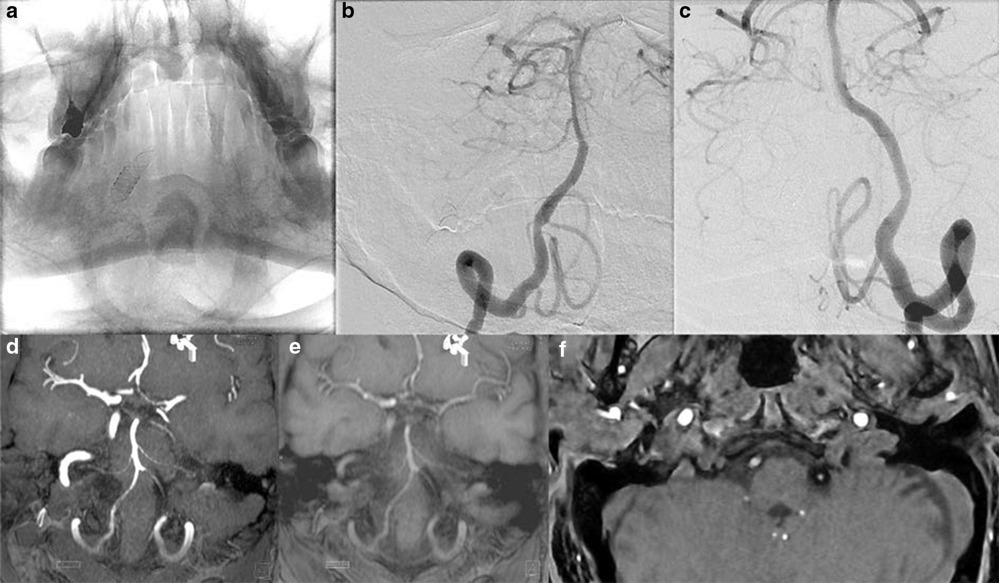
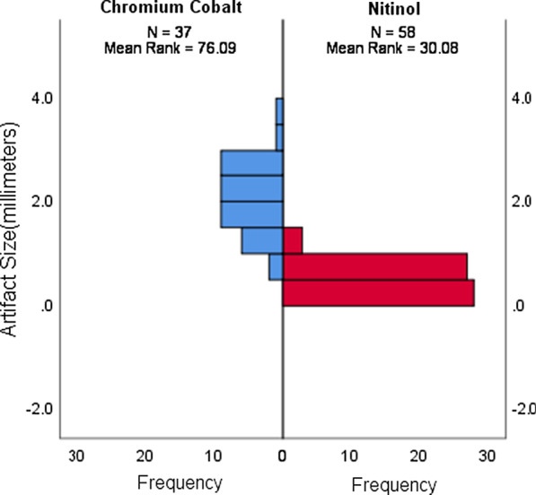
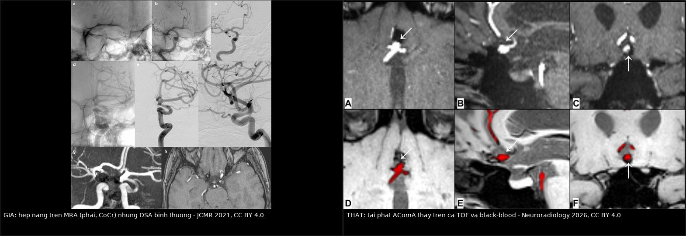
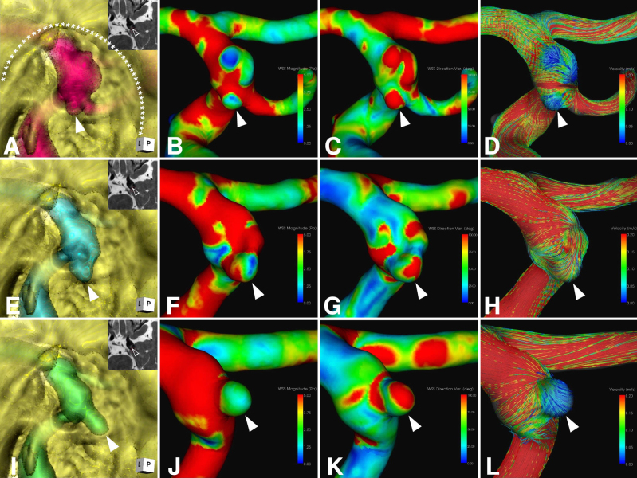
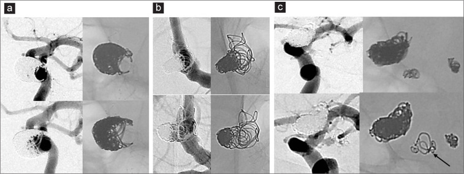
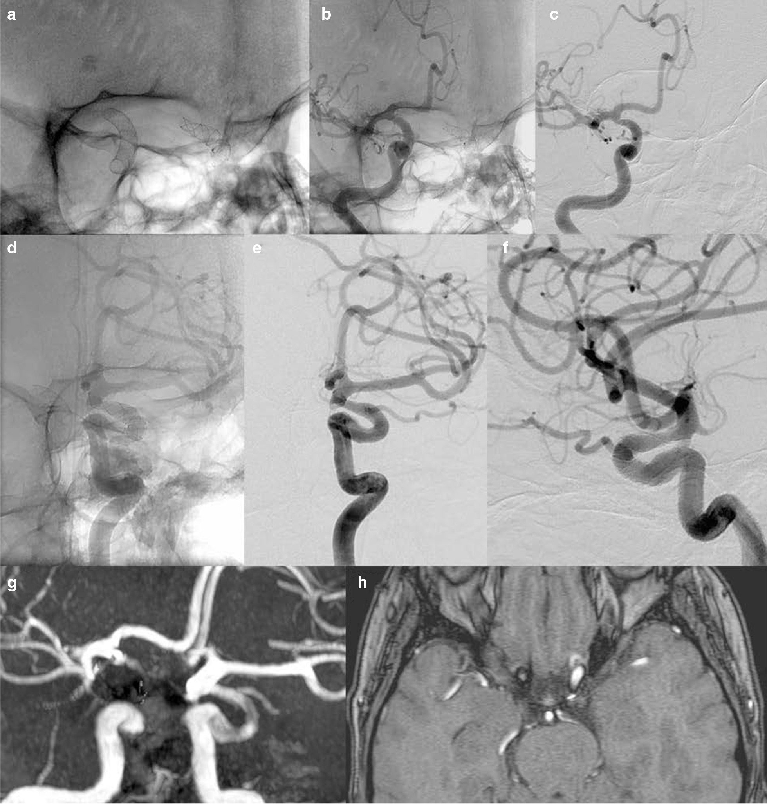
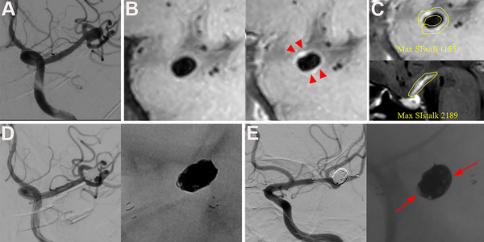
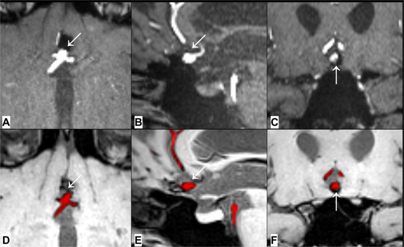

257 — Theo dõi & tái phát sau can thiệp túi phình não: RROC, coil compaction và bẫy artifact MRA / Follow-up after endovascular aneurysm treatment
Tags: pattern:tai-phat pattern:coil-compaction pattern:artifact-MRA pattern:hep-mach pattern:huyet-khoi-tui vung:mach-nao vung:nao score:RROC score:OKM protocol:MRA-TOF protocol:DSA protocol:CTA-co protocol:HR-vwMRI protocol:black-blood-MRI protocol:PCD-CTA
Mức chắc chắn (certainty): tổng hợp y văn (literature synthesis) — 1 đoàn hệ 338 túi phình có định nghĩa tái phát và chỉ định can thiệp lại rõ ràng (Surg Neurol Int 2026, PMC13157938), 1 nghiên cứu artifact theo từng loại flow diverter (JCMR 2021, PMC8182930), 1 nghiên cứu MRI black-blood so TOF (Neuroradiology 2026, PMC13139250), 1 đoàn hệ ngấm thành mạch dự báo tái thông (Brain Behav 2025, PMC12451054), 1 đoàn hệ tái phát sớm ACom (J Neuroendovasc Ther 2025, PMC12014850), 3 ca nguyên văn có ảnh (J Neurosurg Case Lessons 2026, PMC13138284; Surg Neurol Int 2026, PMC13633592) và 1 đoàn hệ tiến cứu 5 năm FRED (Stroke 2026, PMC13138487). Không có thử nghiệm ngẫu nhiên về khoảng cách theo dõi; mọi lịch chụp là tổng hợp thực hành, chỗ suy luận được ghi rõ.
Câu chốt: sau khi đặt coil/stent/flow diverter, ba câu hỏi phải trả lời theo thứ tự — (1) so với phim ngay sau can thiệp, túi phình có ĐỔI không (RROC cho coil, OKM cho flow diverter)? (2) đổi THẬT hay do artifact (flow diverter cobalt–chromium làm mất tín hiệu trên TOF-MRA, độ đặc hiệu chỉ 0,08)? (3) có phải can thiệp lại BÂY GIỜ không? Sai lầm chết người theo cả hai chiều: gọi artifact thành tái phát rồi can thiệp lại vô ích, và gọi tái phát thật là artifact rồi bỏ qua cho tới khi vỡ lại — tỷ lệ can thiệp lại 12,1% (18,1% túi đã vỡ so với 8,5% túi chưa vỡ), và thời điểm can thiệp lại muộn nhất tới 100,6 tháng (8,4 năm) sau lần đầu.
1. Tổng quan bệnh học – cơ chế hình ảnh (TẠI SAO)
1.1 Ba cơ chế tái phát — và vì sao chúng trông khác nhau
- Coil compaction (bóng coil xẹp lại): khối coil chịu lực "búa nước" (water hammer) của dòng đập vào cổ túi mỗi nhát tim; đồng thời huyết khối trong túi co lại và tổ chức hóa, còn không có vỏ xơ giữ hình. Kết quả: bóng coil xẹp dần về phía cổ, để lộ cổ hoặc đáy — hình ảnh học là "bóng coil nhỏ lại, khoảng trống lớn ra", không phải túi phình to lên.
- Regrowth (túi phình lớn lại): thành túi đã mất lớp đàn hồi trong tiếp tục giãn dưới áp lực — hình dạng túi đổi hoàn toàn, bóng coil biến dạng chứ không chỉ xẹp.
- Thiếu sót ban đầu (incomplete initial treatment): nếu ngay sau can thiệp đã còn RROC III, thì "tái phát" chỉ là phát hiện muộn của tồn dư — không phải bệnh tiến triển. Vì vậy phim ngay sau can thiệp là mốc bắt buộc, không có nó thì không phân biệt được (định nghĩa tái phát của PMC13157938 chính là chuyển từ RROC I/II sang III hoặc regrowth).
1.2 Yếu tố dự báo — số liệu định lượng
| Yếu tố | Ngưỡng / con số | Ý nghĩa thực hành | Nguồn |
|---|---|---|---|
| Tỷ lệ lấp đầy thể tích (VER) | 20,86% (nhóm tái phát sớm) vs 35,57% (nhóm không tái phát), p = 0,02 | Lấp < ~25–30% thể tích túi → nguy cơ cao; ghi VER vào báo cáo | PMC12014850 |
| Thời gian hoạt hóa đông máu (ACT) trong mổ | 149 s (tái phát) vs 189,5 s (không), p = 0,0226 | ACT thấp → huyết khối không đủ tổ chức, coil dễ xẹp | PMC12014850 |
| A1 đối bên | 0,26 mm (tái phát) vs 0,85 mm, p = 0,0264 | Bất sản/hypoplasia A1 đối bên → dòng dồn qua ACom, tăng tải lên cổ túi | PMC12014850 |
| Nhánh mạch xuất phát từ túi | 11,8% túi; RROC cuối OR 6,33 (KTC 95% 2,…) | Túi có nhánh trong túi → khó lấp kín, tái phát nhiều hơn | PMC13056674 |
| Ngấm thành mạch đồng tâm (CAWE) trước can thiệp | 15,9% túi nhỏ (< 10 mm); CRstalk ≥ 0,5 | Viêm thành mạch → tái thông 20,3% ở 12,6 tháng; đưa vào mô hình dự báo | PMC12451054 |
| Kích thước túi | Là yếu tố độc lập ở túi đã vỡ (đa biến); ở túi chưa vỡ không đạt ý nghĩa | Đừng chỉ dựa vào kích thước để hẹn theo dõi dày | PMC13157938 |
| Túi đã vỡ vs chưa vỡ | Can thiệp lại 18,1% (23/127) vs 8,5% (18/211) | Túi đã vỡ cần theo dõi sát hơn | PMC13157938 |
1.3 TẠI SAO hình ảnh trông như vậy (vật lý)
- TOF-MRA dựa trên DÒNG CHẢY, không dựa trên lòng mạch: trong stent/flow diverter, dòng bị rối và chậm → mất tín hiệu trong lòng → trông như hẹp nặng hoặc tắc mạch mẹ. Đây là giả hẹp, không phải bệnh lý.
- Kim loại làm lệch pha (susceptibility artifact): cobalt–chromium (CoCr) nhiễm từ mạnh hơn nitinol → vùng mất tín hiệu lớn hơn. Đo trên 95 túi: kích thước artifact tăng theo thứ tự Silk (nitinol) < Derivo < Pipeline < Surpass (CoCr), p < 0,005 (PMC8182930). Hệ quả định lượng: đối chiếu DSA, độ đặc hiệu cho hẹp/tắc mạch mẹ chỉ 0,08 với CoCr so với 0,60 với nitinol — nói cách khác 92% ca "hẹp" trên MRA ở CoCr là GIẢ.
- Nhưng phát hiện TÚI tồn dư/tái phát thì TOF-MRA lại tốt: so DSA (85 túi), κ = 0,88, Se 0,89 / Sp 1,00 / PPV 1,00 / NPV 0,89 — tức MRA không bỏ sót nhiều nhưng không đọc được lòng mạch mẹ (PMC8182930). Hai câu hỏi khác nhau, hai độ tin cậy khác nhau.
- Black-blood T1W (máu/dịch tối, thành và kim loại sáng): không phụ thuộc dòng chảy nên không bị giả hẹp; phân đoạn tự động bằng học sâu đạt Dice 0,81, đồng thuận với TOF 78% (70/90), tỷ lệ tái phát lớn 18% (16/90) vs 16% (14/90), so DSA (22 ca) độ chính xác 73% vs 77%, Se 62% cả hai, Sp 79% vs 86% (PMC13139250). Hai chuỗi bổ sung nhau theo vị trí: ACom có 7 ca chỉ black-blood thấy, thân nền có 5 ca chỉ TOF thấy.
- CT (kể cả PCD-CTA) sau flow diverter: tốt khi chỉ có FD (đánh giá lòng stent, áp sát thành, tắc túi khớp DSA), nhưng hạn chế khi có coil đi kèm vì artifact kim loại (J Neuroendovasc Ther 2026, PMC12981938) — nên coil + FD vẫn cần DSA.
- "Silent MRA" (MRA không cản quang) theo chuỗi thời gian: cho thấy tồn dư ở cổ DI CHUYỂN dọc mặt phẳng cổ (6, 12, 18 tháng) chứ không lớn dần đồng tâm — hiện tượng "remnant drift", giải thích vì sao đo một lần dễ kết luận sai (PMC13138284).

Hai flow diverter đặt đối xứng hai bên: nitinol (Silk) một bên và cobalt–chromium (Surpass Streamline) bên kia. (a) DSA nguyên bản; (b, c) DSA đã trừ nền: không hẹp, không tồn dư hai bên. (d–f) MRA không cản quang: bên CoCr bị mất tín hiệu trông như tắc/hẹp trước tắc, bên nitinol bình thường. Nguồn: JCMR 2021 (PMC8182930), CC BY 4.0.
So sánh kích thước artifact (mm) của flow diverter gốc nitinol và gốc cobalt–chromium (Mann–Whitney U, p < 0,005). Xếp tăng dần: Silk < Derivo < Pipeline < Surpass. Nguồn: JCMR 2021 (PMC8182930), CC BY 4.0.1.4 Ngưỡng định lượng trụ cột
| Đại lượng | Con số | Nguồn |
|---|---|---|
| Can thiệp lại sau coil (338 túi, theo dõi 50,4 tháng) | 12,1% tổng; 18,1% túi vỡ; 8,5% túi chưa vỡ; can thiệp lại lần 2 2,4% | PMC13157938 |
| Thời gian đến can thiệp lại lần đầu | 13 tháng (túi vỡ) vs 32,8 tháng (chưa vỡ); muộn nhất 62,1 và 100,6 tháng | PMC13157938 |
| ISAT (dẫn trong bài) | can thiệp lại sớm 8,8% (coil) vs 3% (clip); mạn 8,3% vs 0,9%; thời gian trung bình 41,4 tháng vs 5,7 tháng | PMC13157938 |
| BRAT (dẫn trong bài) | sớm 10,6% vs 4,5%; mạn 20% vs 0,8% | PMC13157938 |
| Tái phát sớm sau coil ACom vỡ (44 ca) | 6/44 (13,6%) đã RROC III ngay 2 tuần dù không có coil compaction; can thiệp lại 8/44 (18,2%) | PMC12014850 |
| Biến chứng của chính lần can thiệp lại (51 lần) | 4,9% (2/41) thuyên tắc, 1 ca mRS 2→3; 94,1% (48/51) không giảm mRS | PMC13157938 |
| Tái phát "lớn" (≥ 3 mm) trên MRI | 18% (black-blood) / 16% (TOF) ở 90 túi | PMC13139250 |
| FD: tắc hoàn toàn/gần hoàn toàn (OKM C–D) ở 5 năm | 95,3% (225/236) — FRED, đoàn hệ tiến cứu | PMC13138487 |
| Artifact theo thiết bị | Silk < Derivo < Pipeline < Surpass, p < 0,005 | PMC8182930 |
| Độ đặc hiệu MRA cho hẹp mạch mẹ | 0,08 (CoCr) vs 0,60 (nitinol) | PMC8182930 |
2. Mẫu hình + chẩn đoán phân biệt theo kiểu thay đổi (Gamut)
Mẫu hình chốt: *túi phình đã can thiệp, hình thái thay đổi so với phim ngay sau can thiệp; câu hỏi không phải "có bất thường không" mà là "cái gì đổi, so với mốc nào, trên chuỗi nào".*
2.1 Gamut theo thứ đổi (đọc từng mục)
| Cái gì đổi | Nghĩ tới | Dấu hiệu chốt trên hình |
|---|---|---|
| Bóng coil xẹp, khoảng trống lớn ra | Coil compaction | Bóng coil nhỏ hơn trên DSA/CT; RROC I/II → III; không có máu trong túi mới |
| Hình dạng túi đổi, bóng coil biến dạng | Regrowth | Túi to ra / đổi trục, coil méo, RROC IIIb; nguy cơ vỡ lại |
| Cổ còn sáng, không đổi qua nhiều lần chụp | Tồn dư ổn định (RROC II) | Không tiến triển ≥ 2 lần chụp; không cần can thiệp |
| Mạch mẹ "hẹp/tắc" trên MRA, DSA bình thường | Artifact CoCr | DSA lòng mạch đều; artifact lớn quanh stent; hay gặp Pipeline/Surpass |
| Mạch mẹ hẹp thật trong stent | Tăng sinh nội mạc / huyết khối trong stent | Hẹp thấy cả trên DSA, ± triệu chứng thiếu máu; không mất khi đổi chuỗi |
| Túi "đầy" trên T1, không có dòng trên DSA | Huyết khối trong túi sau FD | T1 tăng tín hiệu trong túi, không ngấm, DSA OKM B–D; theo dõi tiếp |
| Vòng coil nằm ngoài túi | Coil extrusion | Coil lòi ra ngoài thành/cổ; khó can thiệp lại → mổ kẹp |
| Túi mới ở vị trí khác | Túi de novo | Vị trí khác túi cũ; đánh giá lại yếu tố nguy cơ (HA, hút thuốc) |
2.2 Mnemonic CRASH (5 thứ phải loại trừ khi "tái phát")
- C — Compaction: bóng coil xẹp.
- R — Regrowth: túi lớn lại.
- A — Artifact: giả hẹp/giả tắc do kim loại (CoCr).
- S — Stenosis thật trong stent: tăng sinh nội mạc.
- H — Hemorrhage / huyết khối: chảy máu mới hoặc huyết khối túi.
3. Bảng so sánh phân biệt (ma trận đối chiếu)
| Thực thể (entity) | Hình ảnh điển hình | Chốt vào (rule-in) | Chốt loại (rule-out) | Gợi ý xác nhận |
|---|---|---|---|---|
| Coil compaction | Bóng coil xẹp, khoảng trống ở cổ/đáy lớn dần; RROC I/II → III | So phim ngay sau can thiệp: bóng coil nhỏ đi + RROC tăng bậc | Bóng coil không đổi qua 2 lần chụp ≥ 6 tháng → không tiến triển | DSA (chuẩn); CT lát mỏng đo bóng coil |
| Regrowth | Hình túi đổi hoàn toàn, túi to ra, coil méo | Túi to > 2 mm hoặc đổi trục trên cùng bình diện | Chỉ cổ còn sáng, thân túi không đổi → tồn dư cổ | DSA + so 3D xoay |
| Tồn dư cổ ổn định (RROC II) | "Tai chó" ở cổ, không đổi nhiều năm | Bất biến ≥ 2 lần chụp | Lớn dần hoặc xuất hiện mới → tái phát | DSA/MRA cùng bình diện |
| Artifact CoCr trên TOF-MRA | Mất tín hiệu/mất liên tục mạch mẹ quanh stent, mức độ không khớp túi | DSA lòng mạch đều + artifact lớn quanh stent CoCr | Hẹp vẫn thấy trên DSA → hẹp thật | DSA; black-blood MRI; đổi sang nitinol nếu phải theo dõi bằng MRA |
| Hẹp trong stent thật | Hẹp đồng tâm hoặc lệch tâm trong stent, ± giảm dòng xa | Thấy trên ≥ 2 modality (DSA + CTA/black-blood) + triệu chứng | Chỉ TOF thấy, CoCr, DSA bình thường → artifact | DSA + đo áp lực nếu cần |
| Huyết khối túi sau FD | Túi T1 tăng tín hiệu, không ngấm, không có dòng | Không dòng vào túi trên DSA/ASL + OKM B–D | Có dòng vào túi (OKM A) → chưa tắc, theo dõi | DSA; T1 black-blood; ASL |
| Coil extrusion | Vòng coil ngoài túi/thành mạch, ± hẹp mạch mẹ | Coil lòi rõ trên DSA/CT, không thể coil tiếp | Coil nằm trong túi → tái phát thường | DSA + CT; hội chẩn mổ kẹp |
| Túi de novo | Túi ở vị trí khác, thành mạch mới | Vị trí khác túi đã điều trị + nguy cơ nền (HA, hút thuốc, đa túi) | Cùng vị trí → tái phát, không phải de novo | CTA/DSA toàn bộ; so phim cũ |

Trái: bệnh nhân đặt Surpass (CoCr) bên phải và Silk (nitinol) bên trái — DSA (a–f) không hẹp, nhưng MRA không cản quang (g, h) gợi ý hẹp nặng bên phải (JCMR 2021, PMC8182930, CC BY 4.0). Phải: tái phát thật ở túi ACom đã coil — thấy trên cả TOF-MRA (A–C) và black-blood có phân đoạn (D–F) (Neuroradiology 2026, PMC13139250, CC BY 4.0). Cùng một câu hỏi "có tái phát không", hai câu trả lời trái ngược nếu không có DSA. Ảnh ghép letterbox.3.1 Ba dấu hiệu đọc kỹ
- Dấu "bóng coil nhỏ lại" (compaction): đo chiều cao bóng coil và khoảng cách từ bóng coil tới đỉnh túi trên cùng bình diện, cùng modality; ≥ 2 mm thay đổi mới đáng gọi (ngưỡng "tái phát lớn" trong PMC13139250 là ≥ 3 mm).
- Dấu "mất liên tục mạch mẹ" trên TOF: luôn hỏi loại stent. Nếu CoCr → mặc định là artifact cho tới khi DSA chứng minh ngược (Sp 0,08).
- Dấu "remnant drift": tồn dư ở cổ có thể di chuyển dọc mặt phẳng cổ theo thời gian chứ không lớn dần — đo thể tích và vị trí trọng tâm, đừng chỉ đo một chiều (PMC13138284).

Silent MRA hợp nhất với MR cisternography, nhìn từ trong túi (intradome) ở 6, 12, 18 tháng: tồn dư ở cổ đổi vị trí dọc mặt phẳng cổ (mũi tên) chứ không lớn dần đồng tâm; CFD cho thấy vị trí dòng vào (inflow targeting) thay đổi theo thời gian. Nguồn: J Neurosurg Case Lessons 2026 (PMC13138284), CC BY-NC-ND 4.0 (nguyên bản).4. Protocol chụp + hệ phân độ/điểm chuẩn hóa
4.1 Lịch theo dõi (theo protocol của đoàn hệ 338 túi)
| Mốc | Chuỗi | Mục đích |
|---|---|---|
| Ngay sau can thiệp | DSA cuối (bắt buộc) — chụp 3D xoay, lưu làm mốc RROC | Không có mốc này thì không định nghĩa được tái phát |
| 3 tháng | MRI/MRA (không cản quang) | Phát hiện sớm thiếu sót/tắc, kiểm tra biến chứng |
| 6 tháng | DSA hoặc MRI + CTA | Mốc chính; DSA nếu có stent CoCr hoặc nghi tái phát |
| 12 tháng | DSA hoặc MRI + CTA | Chốt tắc hoàn toàn; so với mốc 6 tháng |
| Hàng năm tới ≥ 5 năm | MRA/CTA, DSA khi có thay đổi | Vì can thiệp lại muộn nhất ghi nhận 100,6 tháng — đừng ngừng theo dõi ở năm 3 |
| Bất kỳ lúc nào có triệu chứng mới | CT/DSA ngay | Đau đầu mới, dấu thần kinh khu trú = chụp, không chờ lịch |
- Đây là lịch của PMC13157938 (MRI ~3 tháng; DSA hoặc MRI+CTA ở 6 tháng và 1 năm), mở rộng theo dõi dài hạn dựa trên thời gian tái phát muộn — phần "hàng năm tới ≥ 5 năm" là suy luận thực hành, nguồn không nêu con số tuyệt đối.
4.2 Phân độ RROC (cho coil) — sửa đổi Mascitelli
flowchart TD
A[Túi phình đã coil: đọc DSA có 3D xoay] --> B{Còn thuốc trong túi?}
B -->|Không| C[RROC I - tắc hoàn toàn]
B -->|Có, chỉ ở CỔ| D[RROC II - tồn dư cổ]
B -->|Có trong ĐÁY| E{Có thấy thành túi?}
E -->|Không, chỉ giữa các vòng coil| F[RROC IIIa - lấp khe coil]
E -->|Có, thấy thành túi| G[RROC IIIb - tồn dư đáy]
C --> H[Theo dõi định kỳ]
D --> H
F --> I{Tiến triển so với mốc?}
G --> I
I -->|Không| H
I -->|Có| J[Can thiệp lại]
- RROC I = tắc hoàn toàn; II = tồn dư cổ; IIIa = thuốc lấp khe giữa các vòng coil (chưa thấy thành túi); IIIb = thuốc trong đáy, thấy thành túi.
- Định nghĩa tái phát dùng trong thực hành (PMC13157938): I/II → III = significant coil compaction (SCC); IIIb = hazardous coil compaction (HCC) → chỉ định can thiệp lại; hình túi đổi hoàn toàn = regrowth.
- Nguyên tắc: RROC I và II → theo dõi; IIIb hoặc tiến triển → can thiệp lại; IIIa → tùy vị trí, triệu chứng, tiến triển.
4.3 Phân độ OKM (cho flow diverter)
- A = túi còn đầy thuốc; B = còn đầy > 50% túi; C = còn < 50% (chỉ còn lối vào); D = không còn thuốc trong túi.
- Mốc thành công là C–D: đoàn hệ tiến cứu FRED 5 năm đạt 95,3% (225/236) (PMC13138487). Đừng kỳ vọng tắc hoàn toàn ngay 6 tháng — tắc tiến triển theo tháng.
4.4 Flowchart quyết định can thiệp lại
flowchart TD
A[Phim theo dõi: có bất thường?] --> B{So với DSA ngay sau can thiệp}
B -->|Cùng RROC/OKM| C[Theo dõi tiếp]
B -->|Xấu hơn| D{Có stent CoCr hoặc coil + FD?}
D -->|Có| E[Mặc định artifact - chụp DSA xác nhận]
D -->|Không| F[Xác nhận trên DSA]
E --> G{DSA xác nhận tái phát?}
F --> G
G -->|Không| C
G -->|Có| H{RROC IIIb, regrowth, hay có triệu chứng?}
H -->|Không, IIIa ổn định| C
H -->|Có| I[Tái can thiệp: coil lại / stent-assisted / flow diverter / WEB]
I --> J{Không khả thi nội mạch hoặc coil extrusion?}
J -->|Có| K[Mổ kẹp ± bypass]
J -->|Không| L[Đặt lại mốc RROC/OKM mới sau can thiệp]
- Lựa chọn can thiệp lại: trong 51 lần can thiệp lại của đoàn hệ 338 túi, 49 lần nội mạch, 2 lần mổ + bypass; 94,1% không giảm mRS (PMC13157938).
- Coil extrusion là tình huống hạn chế nội mạch rõ rệt — 3 ca được mổ kẹp có định vị neuronavigation + theo dõi sinh lý + ICG + Doppler, tái phát ở 6 tháng, 10 năm và gần 20 năm (Surg Neurol Int 2026, PMC13633592).
- Ngấm thành mạch trước can thiệp (CAWE, CRstalk ≥ 0,5) là yếu tố dự báo tái thông → ca có CAWE cần theo dõi sát hơn, có thể dùng để chọn lịch DSA (PMC12451054).
5. Biến thể bình thường và cạm bẫy
5.1 "Bất thường" không phải bệnh
- Tồn dư cổ nhỏ (RROC II) không đổi qua nhiều năm: đây là kết quả chấp nhận được, không phải thất bại — can thiệp lại làm tăng nguy cơ mà không giảm nguy cơ vỡ.
- "Tai chó" (dog-ear) ở cổ thường không tiến triển; chỉ theo dõi.
- Tăng tín hiệu T1 trong túi sau flow diverter: huyết khối lành hóa, không phải máu cấp — đối chiếu DSA/ASL trước khi gọi chảy máu.
- Mất tín hiệu quanh coil/clip trên MRI là artifact kim loại, không phải tổn thương.
5.2 Cạm bẫy (pitfall)
- Đọc MRA mà không biết loại stent — CoCr cho Sp 0,08; "hẹp" gần như luôn là giả (PMC8182930). Luôn ghi loại thiết bị trong phiếu theo dõi.
- Không có phim ngay sau can thiệp — không phân biệt tồn dư ban đầu với tái phát; đây là lỗi hệ thống hay gặp khi bệnh nhân chuyển viện.
- "RROC III = thất bại, phải can thiệp" — IIIa có thể ổn định nhiều năm; chỉ IIIb/tiến triển mới can thiệp (PMC13157938).
- Bỏ sót tái phát ACom vì chỉ đọc TOF — 7 ca ACom chỉ black-blood thấy (PMC13139250); ngược lại thân nền có 5 ca chỉ TOF thấy → hai chuỗi bổ sung, không thay thế.
- Tin PCD-CTA khi có coil + FD — artifact che lòng stent và túi; vẫn cần DSA (PMC12981938).
- Kết luận tái phát chỉ vì "tồn dư to ra" trên một bình diện — phải đo cùng bình diện, cùng modality; remnant drift làm tồn dư "đổi chỗ" mà không to lên (PMC13138284).
- Tái phát sớm sau coil ACom — 13,6% đã RROC III ngay 2 tuần dù không có coil compaction; đừng chờ 6 tháng mới chụp lại ở nhóm VER thấp, ACT thấp, A1 đối bên nhỏ (PMC12014850).
- Coil extrusion — dễ bị đọc là "tái phát thường" và cố coil tiếp; coil đã lòi ra ngoài thì nội mạch thất bại, cần mổ kẹp (PMC13633592).
- Ngừng theo dõi ở năm 3 — đã có ca can thiệp lại ở 100,6 tháng; đặc biệt túi chưa vỡ lớn có thể tái phát rất muộn (PMC13157938).
- Bỏ qua triệu chứng vì "phim 6 tháng bình thường" — đau đầu mới/dấu khu trú phải chụp ngay, không theo lịch.
6. Tự lượng giá — Blind Quiz
Ca 1 — Ba kiểu tái phát. Nhìn DSA trước và mô tả từng hàng trước.

- Gợi ý: mỗi hàng là một kiểu: trên trái = DSA cuối lần đầu; trên phải = hình coil lúc đó; dưới trái = DSA trước can thiệp lại; dưới phải = hình coil lúc đó.
- Câu hỏi: Hàng (a), (b), (c) khác nhau ở điểm nào? Hàng nào bắt buộc can thiệp lại? Vì sao?
Bấm để hiện đáp án (findings + chẩn đoán)
- (a) Significant coil compaction (SCC): bóng coil xẹp rõ nhưng thành túi chưa lộ; thuốc vào vùng cổ/đáy — theo dõi hoặc can thiệp tùy chọn.
- (b) Hazardous coil compaction (HCC): bóng coil xẹp + thành túi lộ một phần → chỉ định can thiệp lại (nguy cơ vỡ lại).
- (c) Regrowth: hình dạng túi đổi hoàn toàn, túi lớn lên (mũi tên đen) → tái phát thật, cần can thiệp.
- Nguyên tắc: HCC là nhóm được khuyến cáo can thiệp lại; SCC tùy chọn; tắc hoàn toàn/tồn dư cổ thì theo dõi.
- Nguồn: Surg Neurol Int 2026 (PMC13157938), CC BY-NC-SA 4.0 (nguyên bản).
Ca 2 — Bệnh nhân đặt hai flow diverter hai bên. Nhìn MRA trước, đừng nhìn DSA.

- Gợi ý: Surpass (CoCr) bên phải, Silk (nitinol) bên trái, đặt cho túi phình đoạn mắt hai bên.
- Câu hỏi: MRA nói gì ở hai bên? DSA nói gì? Giải thích khác biệt bằng vật lý.
Bấm để hiện đáp án (findings + chẩn đoán)
- DSA (a–f): không có tồn dư túi, không hẹp mạch mẹ ở cả hai bên.
- MRA (g, h): gợi ý hẹp nặng bên PHẢI (nơi có Surpass CoCr), bên trái bình thường.
- Chẩn đoán: giả hẹp do artifact từ tính của CoCr — không phải hẹp thật. Vì sao: CoCr gây lệch pha mạnh → mất tín hiệu trong lòng trên TOF (vốn dựa vào dòng chảy).
- Con số: độ đặc hiệu cho hẹp mạch mẹ 0,08 (CoCr) vs 0,60 (nitinol); artifact Silk < Derivo < Pipeline < Surpass, p < 0,005.
- Xử trí: không can thiệp; nếu buộc theo dõi bằng MRA, ưu tiên nitinol hoặc dùng black-blood/CTA, và DSA khi có nghi ngờ.
- Nguồn: JCMR 2021 (PMC8182930), CC BY 4.0.
Ca 3 — Nữ, túi phình MCA 8,8 mm chưa vỡ, được stent-assisted coiling. Nhìn HR-VWI trước và DSA 9 tháng sau.

- Câu hỏi: (B, C) cho thấy gì trên thành túi? (E) là gì? Hai dấu hiệu này liên quan thế nào?
Bấm để hiện đáp án (findings + chẩn đoán)
- (A) DSA: túi phình 8,8 mm ở chạc MCA trái. (B) HR-VWI trước tiêm/sau tiêm: ngấm thành mạch đồng tâm (CAWE) — đầu mũi tên đỏ. (C) CRstalk = 0,53 (≥ 0,5). (D) Sau stent-assisted coiling: tắc tốt. (E) DSA 9 tháng: tái thông nhẹ + coil compaction ở cổ và đáy (mũi tên đỏ).
- Liên hệ: CAWE là dấu viêm thành mạch; trong 69 túi nhỏ, 15,9% có CAWE, tái thông 20,3% ở 12,6 tháng, và CAWE + CRstalk ≥ 0,5 là yếu tố dự báo độc lập → lịch theo dõi sát hơn.
- Bài học: ngấm thành mạch trước can thiệp là thông tin tiên lượng, không chỉ để quyết định có mổ hay không.
- Nguồn: Brain Behav 2025 (PMC12451054), CC BY 4.0.
Ca 4 — Túi ACom đã coil, theo dõi 12 tháng. Hai chuỗi MRI, cùng bệnh nhân.

- Câu hỏi: (A–C) và (D–F) là hai chuỗi nào? Tái phát ở đâu? Vì sao phải dùng cả hai?
Bấm để hiện đáp án (findings + chẩn đoán)
- (A–C) TOF-MRA, dựng đa bình diện: tái phát lớn (mũi tên) sau coil túi ACom. (D–F) black-blood T1W có phân đoạn tự động (đỏ) cùng bệnh nhân: thấy mạch nền và tồn dư/tái phát (mũi tên).
- Vì sao cần cả hai: black-blood không phụ thuộc dòng chảy nên không bị giả hẹp, nhưng nhạy kém hơn ở thân nền (5 ca chỉ TOF thấy); TOF tốt cho túi nhưng mất tín hiệu quanh kim loại và ACom (7 ca chỉ black-blood thấy).
- Con số: đồng thuận 78% (70/90); tái phát lớn 18% vs 16%; so DSA (22 ca) Se 62% cả hai, Sp 79% vs 86%.
- Nguồn: Neuroradiology 2026 (PMC13139250), CC BY 4.0.
Bài liên quan chéo
- 200 – Tổng quan hệ Thần kinh
- 207 – Phình mạch nội sọ chưa vỡ — quyết định can thiệp lần đầu (PHASES/ELAPSS/UIATS, AWE)
- 241 – Đọc HR-vwMRI thành mạch nội sọ — kỹ thuật đọc ngấm thành mạch (CAWE)
- 248 – Can thiệp nội mạch giả phình & bóc tách mạch cổ — stent/coil ở mạch cổ
- 212 – Xuất huyết não — biến cố chảy máu sau can thiệp
- 211 – Đột quỵ não — thiếu máu do hẹp trong stent/huyết khối
- 201 – Protocol sọ não — chuỗi MRI/CTA nền
Ảnh
- Tên file:
257_*_Modality_SourceID.jpg; nguồn + giấy phép từng ảnh trongimages/CREDITS.md. images/composite_artifact-vs-tai-phat.jpg— ảnh ghép chỉ từ nguồn CC BY 4.0 (PMC8182930 + PMC13139250), letterbox bằngtools/make_composite.py.- Ảnh CC BY-NC-ND (PMC13138284) và CC BY-NC-SA (PMC13157938) dùng nguyên bản, không đưa vào composite.
Không dùng để chẩn đoán độc lập khi chưa có người hướng dẫn.